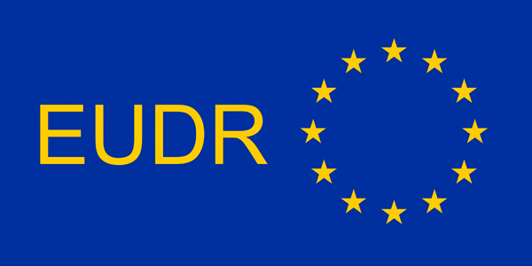

You may also be interested in

News & Updates
Stay informed about KRAMA’s latest initiatives, field activities, and insights on traceability and responsible sourcing.

Traceability Search
Explore KRAMA’s traceability network to verify producers, products, and value-chain actors through trusted data.
💬
Raise a Concern
Contact us if you believe a registered actor is not complying with agreed transparency or traceability standards.